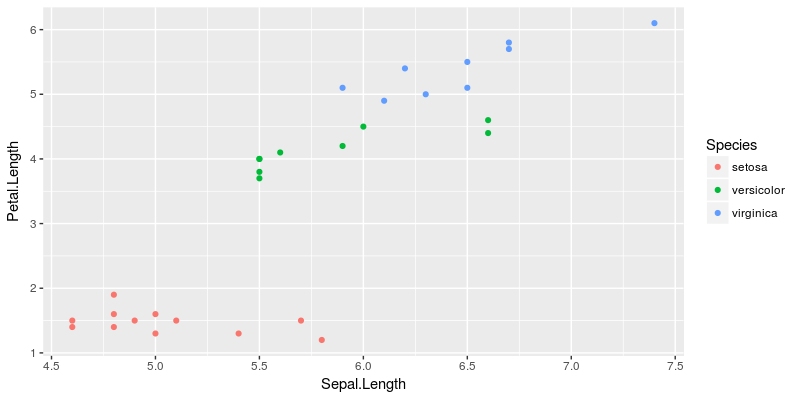
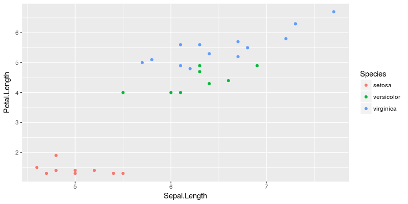

R and active binding (and pizza)
Active binding, also known as “That cool stuff from {R6}”.
What on earth is binding?
First things first: what is binding? You already know the answer to that question: it’s the simple act of assigning a value to a name/symbol. For example:
# With
a <- 5
# You bind the value 5 to the name `a`
Yes, this is as simple as that. In other words, you assign the symbol a to a memory slot on your computer which contains the value 5. Each time you evaluate the symbol, R goes and gets this value in memory.
So, active binding?
A cool feature of {R6} is active binding, which is the process of using a symbol which looks like a variable but behave as a function. You can create these with the active method when defining your class.
library(R6)
ClassyClass <- R6Class("ClassyClass",
active = list(
classy_word = function(value){
if (missing(value)) sample(c("Classy","Modish", "High-Class","Dashing","Posh"), 1)
else cat(paste("Your classy word is", value))
}
))
classy_object <- ClassyClass$new()
classy_object$classy_word
[1] "Dashing"
classy_object$classy_word
[1] "Classy"
classy_object$classy_word <- "Mod"
Your classy word is Mod
Great. As you can see, you can access classy_word like a common variable, but it behaves like a function, randomly printing a word from a list, or printing the word you assign it. As you can see, the binding is not fixed, i.e. not on a definite value, but active, as it runs a function each time you call this symbol.
Well, can we mimick it without {R6}?
Creating active binding in R
The naive approach would be to run :
classy_word <- function(value){
if (missing(value)) {
sample(c("Classy","Modish", "High-Class","Dashing","Posh"), 1)
} else {
cat(paste("Your classy word is", value))
}
}
# It works as a regular function
classy_word()
[1] "Dashing"
# But if you try to call it without the parentheses :
classy_word
function(value){
if (missing(value)) {
sample(c("Classy","Modish", "High-Class","Dashing","Posh"), 1)
} else {
cat(paste("Your classy word is", value))
}
}
#It describes you the function
But the good news is: you can make the classy_word symbol, alone, behave as the classy_word from the {R6} class. For this, we just need the makeActiveBinding() function.
This function takes three args:
sym: the symbol you want to bind the function tofun: The function you want to bind the symbol toenv: the environement the symbol will be binded to
makeActiveBinding(sym = "classy_word",
fun = function(value){
if (missing(value)) {
sample(c("Classy","Modish", "High-Class","Dashing","Posh"), 1)
} else {
cat(paste("Your classy word is", value))
}
},
env = .GlobalEnv
)
classy_word
[1] "Modish"
classy_word
[1] "High-Class"
classy_word <- "Modish"
Your classy word is Modish
Ok, not really useful,I know… But you can think of more useful use, like a random sampler:
makeActiveBinding(sym = "random_iris",
fun = function(value){
return(dplyr::sample_n(iris, 30))
},
env = .GlobalEnv
)
random_iris %>% head
Sepal.Length Sepal.Width Petal.Length Petal.Width Species
36 5.0 3.2 1.2 0.2 setosa
105 6.5 3.0 5.8 2.2 virginica
83 5.8 2.7 3.9 1.2 versicolor
102 5.8 2.7 5.1 1.9 virginica
28 5.2 3.5 1.5 0.2 setosa
106 7.6 3.0 6.6 2.1 virginica
random_iris %>% head
Sepal.Length Sepal.Width Petal.Length Petal.Width Species
61 5.0 2.0 3.5 1.0 versicolor
140 6.9 3.1 5.4 2.1 virginica
95 5.6 2.7 4.2 1.3 versicolor
107 4.9 2.5 4.5 1.7 virginica
8 5.0 3.4 1.5 0.2 setosa
112 6.4 2.7 5.3 1.9 virginica
And of course, it can be used in a larger function call :
library(tidyverse)
random_iris %>%
ggplot(aes(Sepal.Length, Petal.Length, col = Species)) +
geom_point()

random_iris %>%
ggplot(aes(Sepal.Length, Petal.Length, col = Species)) +
geom_point()

Quick aside on environments
The third arg of makeActiveBinding is env, the environment the symbol is binded to. That means you can bind the same symbol to different functions in different environments.
a <- new.env()
b <- new.env()
makeActiveBinding(sym = "example",
fun = function() "a",
env = a)
makeActiveBinding(sym = "example",
fun = function() "b",
env = b)
a$example
[1] "a"
b$example
[1] "b"
Yes, this is what is happening in {R6} :)
PIZZA TIME
And now, just to continue the emoji-pizza R work, here is an active binding to the pizza symbol.
makeActiveBinding(sym = "🍕",
fun = function(value){
if (missing(value)) {
sample(c("California-style pizza", "Chicago-style", "Chocolate", "Detroit-style", "Focaccia al rosmarino Iranian", "Greek", "Hawaiian", "Lazio Matzah", "Meatball", "Mexican", "Neapolitan", "New Haven-style", "New York-style", "Pictou County", "Pizza quattro stagioni", "al taglio", "cake", "capricciosa", "marinara", "pugliese Pizzetta Quad City-style", "Sardenara Seafood", "Sicilian", "Sushi", "St. Louis-style", "Tomato pie White clam pie"), 1)
} else {
cat(paste("Your special pizza type is", value))
}
},
env = .GlobalEnv
)
# Pizza emoji is a special character so you have to surround it with backticks
`🍕`
[1] "Pizza quattro stagioni"
`🍕`
[1] "St. Louis-style"
`🍕`
[1] "New York-style"
`🍕` <- "Vegetarian"
Your special pizza type is Vegetarian
And… bon appetit !
Leave a Comment